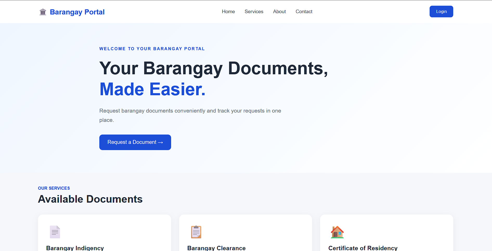
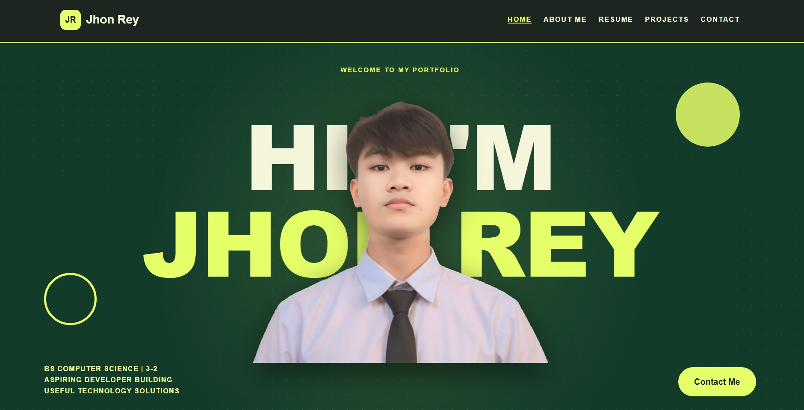
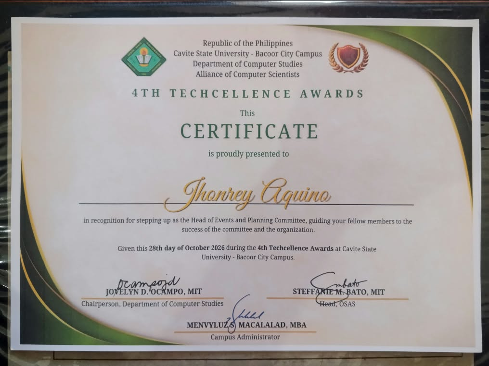
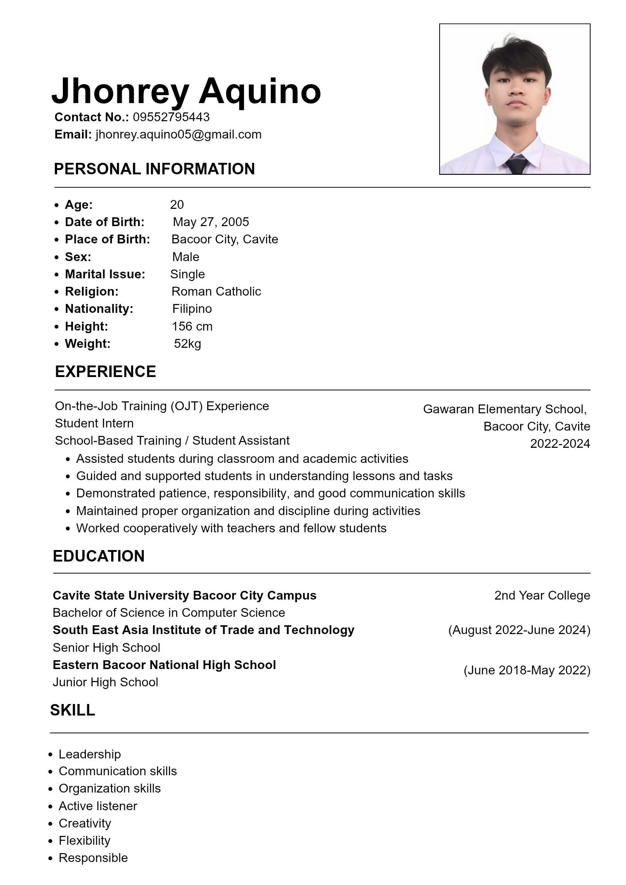

HTML, CSS, and JavaScript
Built the Barangay Portal, including its layout and pages.
WELCOME TO MY PORTFOLIO
BS COMPUTER SCIENCE | 3-2
ASPIRING DEVELOPER BUILDING
USEFUL TECHNOLOGY SOLUTIONS
Hi! I'm Jhon Rey Aquino, a BS Computer Science student at Cavite State University – Bacoor City Campus, section 3-2. I build websites using HTML, CSS, and JavaScript, like this portfolio and the Barangay Portal, which I'm currently developing.
As a Committee Head of the Alliance of Computer Scientists (ACs) and a former student assistant, I enjoy working with others. I aim to keep growing as a Computer Science student and develop useful technology solutions that can make a positive impact on others.
Built the Barangay Portal, including its layout and pages.
Learning to write programs in Python using VS Code and PyCharm.
Use Git and GitHub to store my code and publish projects, like my Tic-Tac-Toe game.
Electrical and electronics repair and installation, and welding.
Serve as a Committee Head of the Alliance of Computer Scientists and take part in student activities.
Debug and fix errors in my own code, such as broken links and layout issues.
Bacoor City Campus
Senior High School
Junior High School
Gawaran Elementary School, Bacoor City, Cavite
MY WORK & ACHIEVEMENTS
Here are some of my projects and achievements as a Computer Science student.

My own idea, inspired by my frequent trips to the barangay hall for documents. Residents can browse documents such as Certificate of Residency, Indigency, and Barangay ID, and submit a request online, while an admin dashboard approves requests. Claim scheduling and a database are planned.

The website you are viewing right now, showcasing my skills, resume, projects, and certificates.
You are here
A browser game I built in my first year using HTML, CSS, and JavaScript. Play against the computer or a friend. The computer tries to win and blocks the player's winning moves, and a score tracker counts wins and draws.
Play Game →An RFID-based automated attendance system for CvSU-Bacoor City Campus. It detects RFID cards automatically, shows attendance information on an LCD screen, and stores records digitally, replacing slow and error-prone roll calls and logbooks. It applies embedded systems, serial communication, and real-time processing, and supports automated attendance evaluation and reliable data storage. I led our group in this project.
Lead a committee of the Alliance of Computer Scientists (ACs) and take part in student activities.
Gawaran Elementary School, Bacoor City, Cavite. Assisted students during classroom and academic activities.

KEEPING IT FRESH
This portfolio grows with me. Here is how I keep it up to date and what I plan to add next. Last updated: November 2026.
Thank you for visiting my portfolio! I'm open to collaborating on web projects and to learning opportunities. Reach out through any of the links below.
